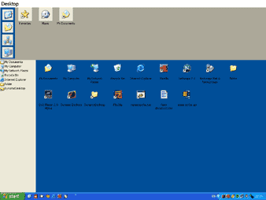
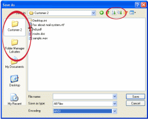

This is an archive-page. The program Dynamic Desktop used to be at http://www.geocities.com/wvw/dd.html. Since Geocities died sometime ago, I created this one.
Dynamic Desktop is an application designed to serve as a replacement for your desktop. I designed it in 2002 because I didn't like the behaviour of the desktops of PC's. This version is nothing more than a first implementation of an idea. The program is referenced in a patent application of AOL, America Online. They never contacted me :-(
Eventually, Dynamic Desktop grew into a new program called Folder View, which got some very nice reviews in PC Magazines. It mainly integrates in Windows Explorer. I would like to take the best parts of both programs to create something great, but that takes too much time I'm afraid.
One of the most primary tasks on a
computer, working with files, is more complex than it needs to be. The
more you work with a computer, the more difficult it gets to organize
all files in folders. And after that: finding, loading and saving them
again. Dynamic Desktop is a simple, but powerful tool to help with this
task.
Dynamic Desktop serves as a replacement
for your desktop. Where the standard desktop is a static pile of
icons, files, sortcuts to programs, the icons on the Dynamic Desktop can be changed
to the files related to the task you are working on. Dynamic Desktop also integrates with the
common open/save dialogs of Windows and makes the files related to the task available
with one click.
Dynamic Desktop divides your desktop
into three dynamic parts. On the top of the Dynamic Desktop, you'll see
the folders inside your 'My Documents'-folder (or a custom folder you
selected yourself). When clicking on one of the icons, the two lower
parts of the desktop will change to represent the files inside the
folder you selected. In this way, each of the entries in the upper part
of the screen acts as a virtual desktop, containing the files and
folders you need when working on your current task. You can easily drop
and access all your files without messing up your desktop.
Unlike Explorer and other filemanagers,
Dynamic Desktop treats shortcuts to folders the same as normal folders.
So if you drop a shortcut to a folder, drive or networklocation into
the upper part of the desktop, you will be able to use this location as
if it resides on your desktop. The three main parts are actual
representations of folders on your harddisk. Just like folders in
explorer. So if you copy/rename/remove something in the desktop, it
will actually be done on your harddisk.
Next to that, Dynamic
Desktop is also available in the well-known dialog-windows, which are
used by almost every program to save and load data (see illustration on
the left, click to zoom in). Dynamic Desktop adds buttons to those dialogs, with which it
is possible to have the same one-click access to the same data. This
also saves many quests and mouseclicks in those small dialogs.
Requirements:
Download Dynamic_Desktop_Setup.exe
Regards,
Wouter van Wijk (contact me at wouter.info)
{kind=link}
{kind=link}